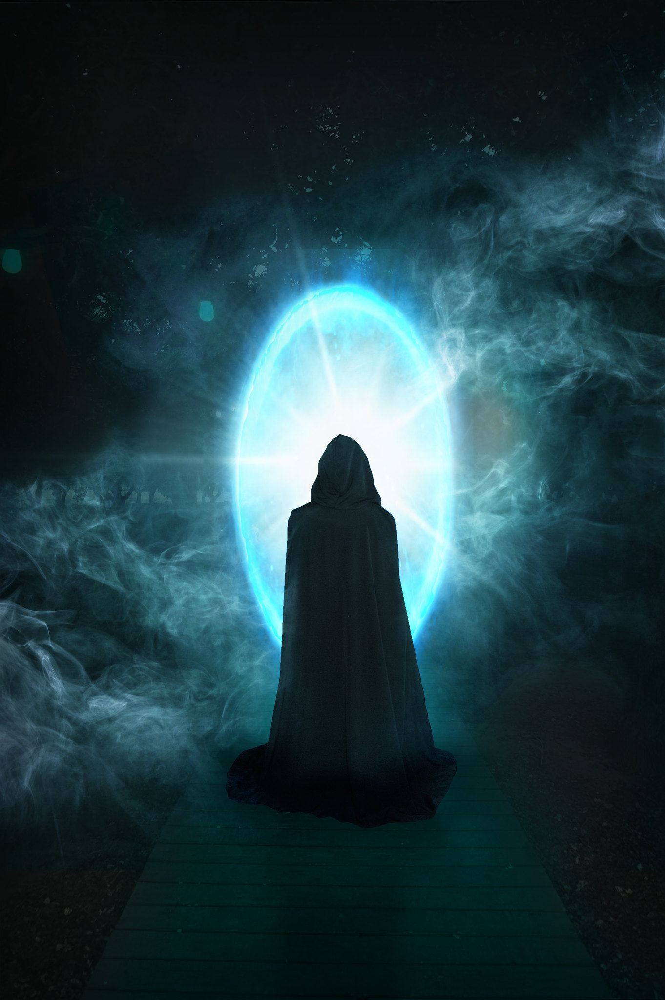
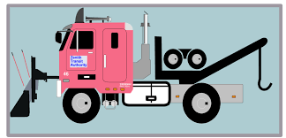
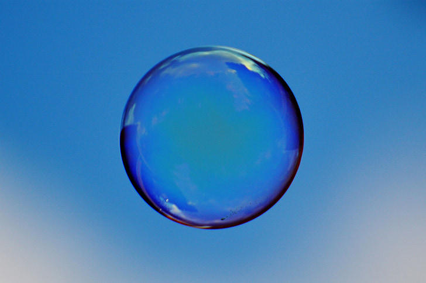
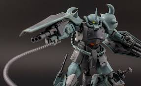
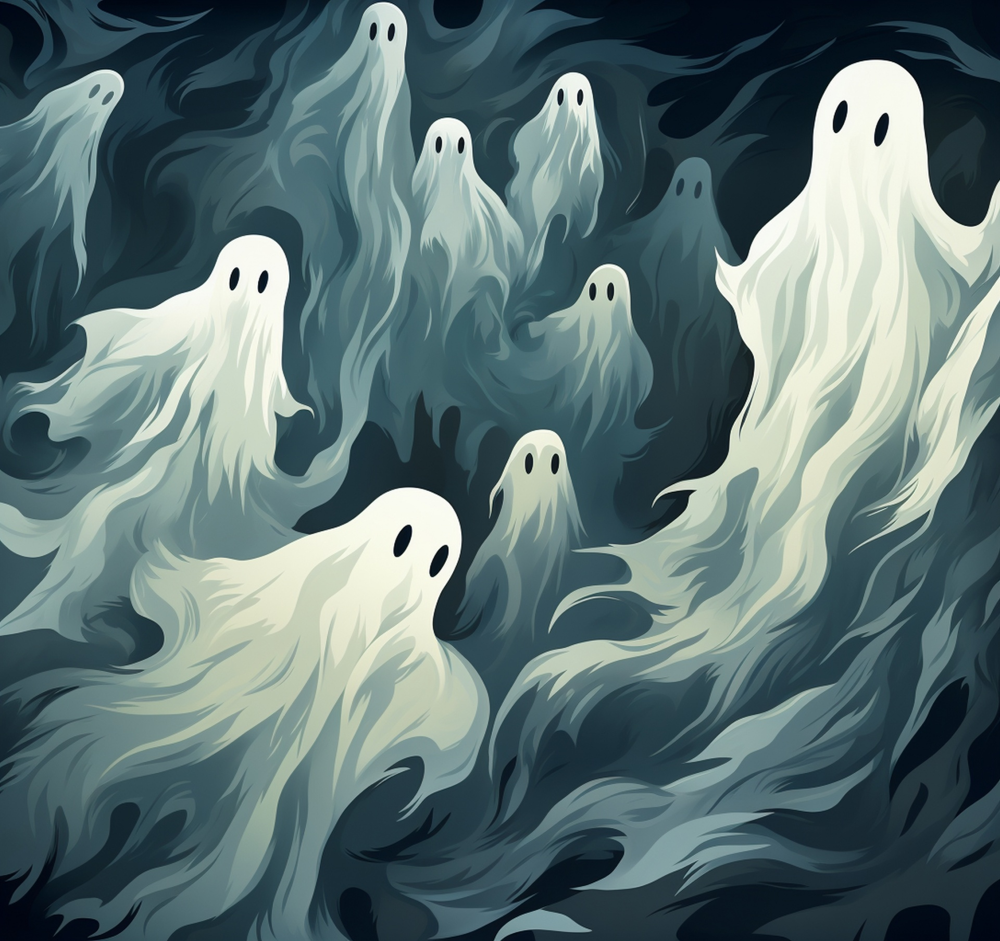

This website was made to make articles discussing the scrapped enemy mobs of the video game, Super Smash Bros. Brawl. Many sources online do discuss, however nearly none discuss the section of enemies this website does. You see, the enemies within this game are split into two categories. Enemies that come from other games, and enemies that orginate from within the game. Many have looked and discussed scrapped enemies that were taken from other games, however this website discuss enemies that were meant to originate in the game. Since the only thing left in the code for them was their names, one can only vaguely speculate what they could've been, which is what this website is for. Enjoy!
    